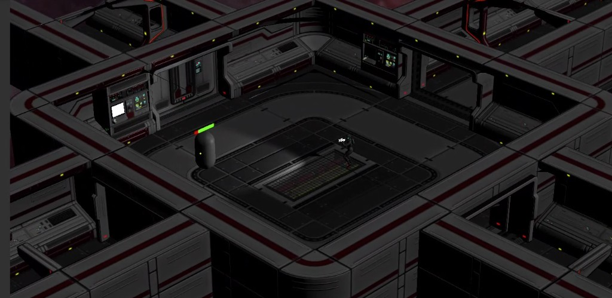
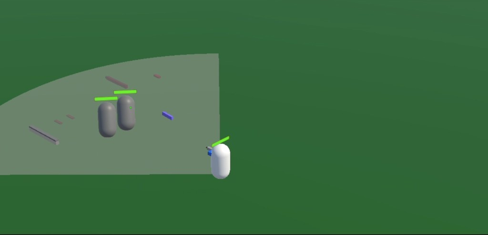

Unity · C# · Gameplay / combat
USS Calliope — isometric ARPG prototype
A sci-fi action RPG built in Unity over eight weeks in a five-person team using an Agile workflow with one-week sprints. The focus of my contribution was end-to-end player combat: input, aiming, data-driven weapons, hit resolution, feedback systems, and supporting editor and audio tooling.
From greybox to ship-ready slice
Early work validated mechanics with primitives: locomotion, UI, and a readable hit chance readout. Mid-sprint shots layered in authored content and character art while retaining debug visualizations for combat. The vertical slice below shows the environment, lighting, interaction prompts, and HUD working together as a cohesive player experience.



Combat architecture
Combat is split into small, testable responsibilities so designers could iterate in data while programmers extended behaviour in code.
-
Input (
AttackInput) — Wraps the Unity Input System and raises high-level events for aim, fire, reload, weapon switch, and unequip. Also exposes move and sprint actions used by accuracy and spread logic. -
Aiming (
PlayerAimController) — Projects the cursor to a ground-aligned plane, applies a short hold threshold before entering aim mode, rotates the character toward the target, drives animator weapon type, and nudges the Cinemachine offset for a subtle aim pull-in. -
Weapons (
PlayerWeaponHandler) — Equips weapon prefabs, gates semi-auto vs full-auto with coroutines, integrates reload and cooldown helpers, and routes magazine state through anAmmoModelbacked by runtime inventory data. -
Execution (
PerformAttack) — Hitscan (per-pellet raycasts), melee (sphere sweep), and unarmed paths share one entry point. Optional Gaussian spread fromBallisticsUtilityperturbs shot direction for ballistic weapons. -
Hits (
ImpactProcessor) — ResolvesIDamageableon colliders, scales hitscan damage by distance using the weapon’s animation curve, and handles melee, non-lethal stun, and delayed unarmed damage with feedback at the impact point.
Hit chance, ballistics, and crosshair feedback
HitChance scores normalized accuracy from
distance (relative to weapon range and falloff curve), stamina and
health, movement and sprint multipliers from the equipped weapon, and
designer-tunable edge cases (for example a small assist band at very low
health). That score feeds both feel and mechanics:
- The crosshair shifts from green → yellow → red as confidence drops, and screen-space noise scales inversely with score so low-confidence shots look unstable before they miss.
- Ballistic weapons reuse the same conceptual signal: spread intensity can track the score so desperate fights read clearly in both UI and gunplay.
-
BallisticsUtility.GetGaussianSpreaduses a Box–Muller transform so pellet clusters feel like real-world dispersion around the aim vector instead of uniform cones.
Data-driven weapons and inventory
SO_WeaponType ScriptableObjects describe
attack category (hitscan, melee, non-lethal, utility), fire rate,
semi-auto vs automatic behaviour, magazine and reload timing, pellet
count, damage-over-distance curves, movement penalties, melee reach, and
audio/visual hooks. Weapons and ammo types receive stable editor-generated
IDs so pickups, UI, and saves stay aligned without hand-maintained keys.
Footsteps and pooled audio
Footsteps run on a dedicated cadence component that mirrors locomotion state from the player controller (walk, sprint, crouch, stamina-aware rules) and fires only while moving. A companion audio layer picks clips with light pitch variation and avoids immediate repeats when multiple clips are available.
Playback never allocates per-step AudioSource
instances: a global AudioPoolManager hands
out pooled sources, and a small handler coroutine returns each source
after its clip finishes so rapid footsteps stay allocation-free.
Editor tooling: GUID generator
I shipped a lightweight EditorWindow
(Tools → GUID Generator) for generating
System.Guid strings, copying them to the
system clipboard, and logging to the console once per session to avoid
duplicate spam. Small quality-of-life tools like this kept content authors
unblocked when wiring ScriptableObject IDs and test data.
What this demonstrates
- Designing gameplay systems as event-driven pipelines (input → aim → weapon → attack → impact) that stay approachable for teammates in design and engineering.
- Bridging designer-facing data (ScriptableObjects, curves, tuners) with programmer-facing services (pools, processors, input facades).
- Shipping player-visible feedback (crosshair, camera, HUD) that reflects the same underlying simulation numbers used for weapons, not a disconnected cosmetic layer.